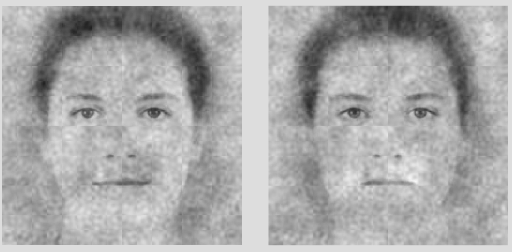

Attention & Interaction
2 Studies
Attentional guides for digital environments
Gaze-transplant experiments and data-driven navigation scaffolds — two projects on how attention shapes and can be shaped by digital environments.

Material perception in an online museum
High-pitched sounds make objects look shinier. Auditory pitch shifts visual gloss judgments automatically.
Games as labs
Games UX research instruction
Classic arcade games — Pac-Man, Pong, maze navigation — modified to isolate perceptual variables.
Seeing Minds
Motion trajectories
Published · Animacy perception
Intentionality: reading minds through motion
We infer goals and intentions from simple moving shapes — rapidly, automatically, and with surprising precision. This project examines the visual features that drive animacy and intentionality judgments.

Published · Social perception
Mischief: a signal for play aggression
A distinctive facial expression — asymmetric, fleeting — that signals playful rather than hostile intent. Its right-side asymmetry appears cross-culturally, and may help children distinguish play from real aggression.
Seeing Forces
Gravity: visual prioritization of speed changes opposite gravity
Observers are more sensitive to acceleration in upward-moving objects — because upward acceleration violates what gravity predicts.

Friction and attention: contact forces drive spatial orienting
A rotating object touching a surface implies a direction of movement via friction. This implied force automatically orients visual attention.